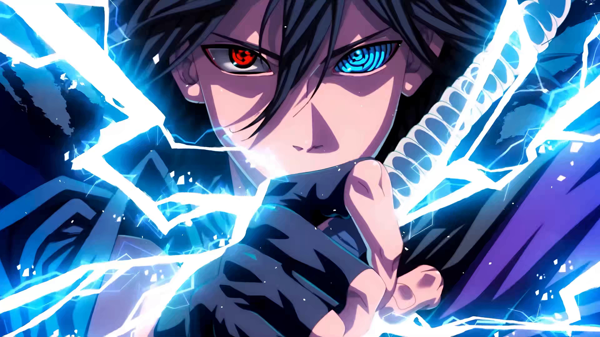

Sasuke Uchiha
Sasuke Uchiha, Naruto evreninin en karmaşık ve derin karakterlerinden biridir. Uchiha klanının son hayatta kalan üyesi olarak, çocukluğunun en erken dönemlerinde büyük bir trajedi ile yüzleşmek zorunda kaldı. Genç yaşta, ailesi ve klanının diğer üyeleri, abisi Itachi tarafından acımasızca öldürüldü. Bu olay, Sasuke'nin ruhunda derin yaralar açtı ve onun intikam arzusunu körükledi. Kendi ailesinin ölümüne tanıklık ettikten sonra, güçlü bir ninja olma hedefiyle eğitimine odaklandı. İlk başlarda Naruto ile yakın bir arkadaşlık kurdu, ancak zamanla karanlık bir yola saptı. Orochimaru'nın etkisi altında güç arayışına girdi ve bu süreçte pek çok dostunu geride bıraktı.
Sasuke, hem fiziksel hem de duygusal olarak kendini geliştirdi, ancak bu süreçte bir dizi ikilemle karşılaştı. Arkadaşlarına olan sadakati ve intikam arzusu arasında sıkışıp kaldı. Itachi ile yüzleşmesi, onun hem içsel çatışmalarını hem de ailesinin geçmişini yeniden düşünmesini sağladı. Itachi'nin ölümüyle birlikte, Sasuke kendini kaybetmiş ve yeni bir hedef belirlemişti: Konoha'yı yok etmek. Ancak zamanla, Naruto ve diğer arkadaşlarının yardımıyla geçmişiyle yüzleşmeyi öğrendi ve kendi kimliğini yeniden tanımlamaya başladı. Sonunda, intikamdan vazgeçerek arkadaşlık ve bağlılık temasını kabul etti. Sasuke'nin hayatı, kayıplar, intikam, dostluk ve öz keşif temalarıyla doludur; bu da onu Naruto'nun evreninde benzersiz bir karakter yapar.